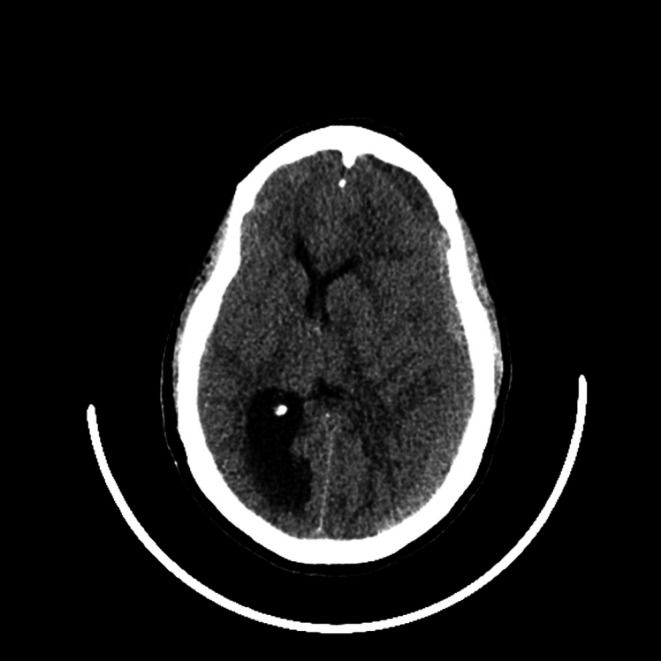
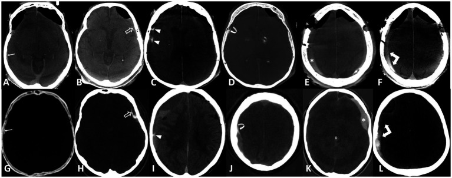
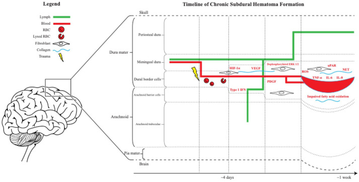
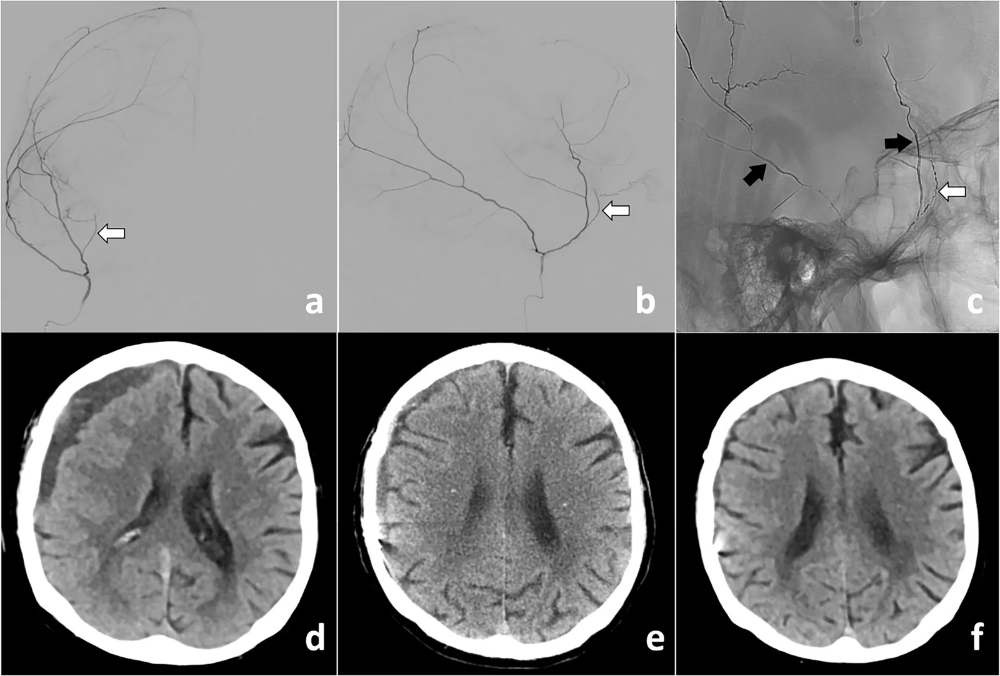

3030 — Tụ máu dưới màng cứng mạn tính (chronic subdural hematoma): màng ngoài/vách, giai đoạn tỷ trọng, ngưỡng mổ và nút động mạch màng não giữa
Tags: pattern:tu-mau-duoi-mang-cung pattern:liem-ngoai-truc pattern:ty-trong-hon-hop pattern:di-lech-duong-giua vung:so-nao score:Markwalder score:midline-shift protocol:CT-so-nao protocol:DSA-MMA incidentaloma:tu-mau-man
Mức chắc chắn (certainty): tổng hợp y văn (literature synthesis) — ghép tổng quan cơ chế – sinh màng (Ther Adv Neurol Disord 2026, PMC13053969), đồng thuận Copenhagen 2024 của iCORIC/DACSUHS (Acta Neurochir 2026, PMC13186905), tổng quan chẩn đoán – điều trị (J Clin Med 2026, PMC13258658), tổng quan nút động mạch màng não giữa kèm 4 RCT 2024–2025 (Eur Radiol 2026, PMC13574904), phân tích gộp nút mạch (Front Surg 2026, PMC13541657) cùng các loạt bệnh nhân về tỷ trọng máu tụ tồn dư, khoan xoắn ốc, nội soi và màng tăng ngấm thuốc. Chỗ các nghiên cứu mâu thuẫn được ghi rõ tại chỗ, không chọn một con số có lợi.
Câu hỏi thực hành: cụ 82 tuổi, té nhẹ 6 tuần trước, đau đầu tăng dần, đi lại chậm, lẫn nhẹ; đang dùng apixaban vì rung nhĩ. CT sọ không cản quang: khối liềm dưới màng cứng bán cầu phải, dày 18 mm, tỷ trọng HỖN HỢP (phần trước giảm, phần sau tăng tỷ trọng), đẩy đường giữa 9 mm. Câu hỏi: đây là máu tụ cấp hay mạn, cần mổ chưa, mổ kiểu gì, có nên nút động mạch màng não giữa (MMA) không — và với phim CT 7 tuần sau mổ thấy còn dải màng ngấm thuốc + ổ dịch 8 mm, đó là máu tụ tái phát hay màng trong còn lại? Bài chốt theo hai trục: (1) tỷ trọng × kiến trúc trên CT để biết máu tụ đang ở giai đoạn nào và nguy cơ tái phát; (2) màng nào đang sinh máu — màng ngoài (outer membrane) là nguồn tái phát, màng trong (inner membrane) và vách (septation) chỉ là di chứng/bẫy dịch. Nối 212 – Xuất huyết sọ, 3025 – Đảo ngược kháng đông, 3028 – Vá sọ sau mở sọ giảm áp, 201 – Protocol CT/MRI sọ não.
1. Tổng quan bệnh học – cơ chế hình ảnh: vì sao máu tụ "tự lớn" dù chấn thương đã qua
- Nơi phát sinh: lớp tế bào bờ màng cứng (dural border cell layer — DBC) nằm giữa màng cứng và màng nhện là lớp yếu nhất, nghèo collagen nhất của màng não; một cú va nhẹ (hoặc không có chấn thương rõ) tách lớp này tạo khoang tiềm tàng — không phải chảy máu ồ ạt (PMC13053969).
- Trình tự sinh màng (mốc thời gian):
- Ngày 0–3: tách DBC, hồng cầu và fibrin lắng; bạch cầu/đại thực bào vào ổ máu tụ, IL-6, IL-8 tăng → viêm tại chỗ.
- Khoảng 1 tuần: nguyên bào sợi tổng hợp collagen (TGF-β1/SMAD), VEGF, PDGF, uPAR thúc đẩy tân mạch → hình thành màng ngoài (phía màng cứng, giàu mạch, mạch thành mỏng, dễ rò) và màng trong (phía màng nhện, ít mạch, không phải động lực chính).
- Sau 2–3 tuần: màng ngoài trở thành tissue sinh mạch tự nuôi — mạch lớn phía ngoài, nhiều vi mạch phía lòng ổ → tái chảy máu vi thể + rò huyết tương liên tục; fibrinolysis tại chỗ (MMP-9, plasmin) làm máu không đông; dẫn lưu bạch mạch màng não suy giảm → ổ máu tụ tự tăng thể tích (PMC13053969).
- Hệ quả: máu tụ mạn không phải "cục máu cũ nằm yên" mà là một túi mô viêm sinh mạch — đây là lý do corticoid toàn thân không còn được dùng thường quy và nút động mạch nuôi màng có thể làm tan máu tụ (PMC13258658).
- TẠI SAO tỷ trọng CT thay đổi theo thời gian (bắt buộc hiểu vật lý, không học vẹt):
- Tăng tỷ trọng (hyperdense): hemoglobin còn nguyên trong hồng cầu đặc → hấp thụ tia X mạnh; máu tụ cấp 50–90 HU (212).
- Giảm tỷ trọng (hypodense): hồng cầu ly giải, hemoglobin thoái giáng thành hemosiderin/ferritin (không còn đậm độ cao) + dịch giàu protein nhưng ít tế bào + phù/tăng nước → ~19–23 HU (đo trên 223 ca sau mổ: 19,0 ± 9,1 HU ở nhóm không tái phát; 23,2 ± 13,1 HU ở nhóm tái phát — PMC13516401).
- Đẳng tỷ trọng (isodense): đậm độ dịch xấp xỉ nhu mô não (vỏ xám ~35–40 HU, chất trắng ~25–30 HU) → dấu hiệu gián tiếp mới là chìa khóa: bó chặt não, xóa rãnh, não thất bị ép, đường giữa lệch (xem mục 5).
- Hỗn hợp (mixed): nhiều đợt chảy máu ở các tuổi khác nhau — phần giảm tỷ trọng (dịch cũ) cạnh phần tăng tỷ trọng (máu mới), có thể có mức dịch–dịch (fluid–fluid level); hỗn hợp = dấu hiệu máu tụ đang hoạt động → nguy cơ tái phát cao (PMC13258658, PMC13574904).
- TẠI SAO màng ngấm thuốc: màng ngoài là mô hạt tân mạch — mạch có lỗ thủng, thoát thuốc cản quang; trên CT có cản quang thấy đường viền mỏng sát xương; trên photon-counting CT/iodine map thấy rõ màng ngoài, màng trong, vách, dấu "spandrel", ngấm trong lòng và mức dịch–dịch (PMC12122510). Đây là cơ sở để phân biệt màng còn lại với máu tụ tái phát ở mục 5.
- TẠI SAO trên MRI: máu mạn → methemoglobin ngoại bào + hemosiderin → T1 đồng/tăng nhẹ, T2 tăng (dịch) với viền tối hemosiderin ở màng trong; màng ngấm gadolinium; không hạn chế khuếch tán (dịch ngoại bào) trừ khi có cục máu tổ chức/áp-xe. MRI nhạy hơn CT với máu tụ đẳng tỷ trọng hai bên và với màng/vách (PMC13258658 — bảng so sánh CT vs MRI).
- Ngưỡng định lượng phải nhớ:
- Tần suất: 1,7–20,6/100.000 dân/năm, tăng theo tuổi (PMC13053969).
- Tái phát sau mổ: 10–20% (PMC13574904); 20,2% (45/223) trong loạt đo tỷ trọng tồn dư (PMC13516401); 14,9% trong loạt 101 ca mổ 2 lỗ khoan (PMC13544649).
- Từ dịch dưới màng cứng (hygroma) tiến triển thành CSDH: ~25% (PMC13258658).
- Thời gian "mạn": tổn thương được gọi mạn khi ≥ 3 tuần trên lâm sàng/CT (màng đã hình thành); tổ chức hóa (organized) khi có vách dày, vôi hóa, nhiều thùy — nhóm này không đáp ứng mổ khoan đơn thuần (PMC13339822).
2. Mẫu hình + chẩn đoán phân biệt theo vị trí và theo kiến trúc (gamut)
- Mẫu hình cốt lõi: người > 65 tuổi, té nhẹ vài tuần trước (hoặc không nhớ chấn thương), đau đầu, chậm chạp, lẫn, yếu nửa người, triệu chứng tiến triển theo tuần; CT có liềm ngoài trục ôm bờ não, vượt đường khớp sọ, không vượt liềm đại não.
- Gamut theo tỷ trọng CT (5 thể — nhớ để đọc đúng "tuổi" máu):
- Giảm tỷ trọng đồng nhất — CSDH "thuần" (dịch), nguy cơ tái phát thấp nhất.
- Đẳng tỷ trọng — CSDH 4–8 tuần, dễ bỏ sót, đặc biệt hai bên.
- Tăng tỷ trọng — máu tụ cấp/bán cấp hoặc tái chảy máu trong CSDH (không đồng nghĩa "máu tụ cấp đơn thuần").
- Hỗn hợp — nhiều đợt chảy máu, mức dịch–dịch, nguy cơ tái phát cao.
- Hỗn hợp + vôi hóa/vách dày — CSDH tổ chức hóa, cần nội soi/mở sọ hơn là khoan.
- Gamut theo kiến trúc (mô hình tiến triển của Schievink, bảng trong PMC13258658): hygroma (dịch não tủy) → đồng nhất (homogeneous) → dạng phiến (laminar) → tách lớp (separated) → chuyển tiếp (gradation) → dạng lưới/xơ (trabecular). Laminar/separated có mật độ mạch trong màng cao hơn → tái phát cao hơn; trabecular xơ hóa dần → ít chảy máu hơn.
- Gamut theo vị trí:
- Lồi bán cầu (convexity) — thể điển hình, hay gặp nhất.
- Liên bán cầu (interhemispheric/parafalcine) — dễ nhầm với máu tụ dưới nhện liềm hoặc u màng cứng liềm; liềm dày > 5 mm đối xứng mới đáng ngờ.
- Lều tiểu não (tentorial) và hố sọ sau — hiếm, chèn ép thân não sớm với thể tích nhỏ, triệu chứng nặng không tương xứng.
- Hai bên (bilateral) ~20–25% — lệch đường giữa có thể bằng 0 vì hai bên "bù trừ" → bẫy bỏ sót; yếu tố nguy cơ tái phát độc lập (PMC13574904, PMC13544649).
- Gamut theo bối cảnh (quyết định xử trí):
- Chống đông/kháng kết tập tiểu cầu — tái phát cao hơn; không phải chống chỉ định mổ; thời điểm dùng lại bàn ở mục 4.
- Sau shunt não thất / mở sọ giảm áp — máu tụ dưới màng cứng do quá dẫn lưu (hạ áp lực nội sọ), khác cơ chế CSDH tự phát; xử lý van/shunt trước hay song song.
- Teo não, nghiện rượu, động kinh, bệnh thận — làm khoang dưới màng cứng rộng ra, máu tụ lớn hơn mới có triệu chứng.
- Nhi — ngoài phạm vi bài này (khác sinh học, thường do shunt/quá dẫn lưu hoặc ngược đãi).
- Gợi nhớ "CHRONIC" khi đọc CT: Crescent (liềm) · Heterogeneous (hỗn hợp = đang chảy) · Recurrence risk (tái phát theo kiến trúc) · Old patient (người già, teo não) · No midline shift needed (hai bên có thể không lệch) · Isodense trap (đẳng tỷ trọng) · Contrast/membrane (màng ngấm thuốc).
3. Bảng so sánh phân biệt (ma trận đối chiếu)
| Thực thể (entity) | Hình ảnh điển hình | Chốt vào (rule-in) | Chốt loại (rule-out) | Gợi ý xác nhận |
|---|---|---|---|---|
| CSDH (máu tụ mạn) | Liềm ngoài trục, giảm/đẳng/hỗn hợp tỷ trọng, ôm bờ não, vượt khớp sọ, màng/vách; não bị bó chặt | Triệu chứng tiến triển theo tuần ở người già + liềm + tỷ trọng thấp/hỗn hợp ≥ 3 tuần | Thấu kính hai mặt lồi, không vượt khớp → ngoài màng cứng; dịch đồng tỷ trọng dịch não tủy, không màng → hygroma | CT không cản quang lát mỏng; MRI T1/T2/FLAIR + T1+Gd khi nghi đẳng tỷ trọng/hai bên |
| SDH cấp (máu tụ dưới màng cứng cấp) | Tăng tỷ trọng đồng nhất 50–90 HU, liềm, phù não, thường sau chấn thương mạnh | Chấn thương trong vài giờ–3 ngày + tăng tỷ trọng đồng nhất | Giảm tỷ trọng + màng + triệu chứng tuần → mạn | CT cấp; theo dõi 6 giờ nếu đang chảy |
| Hygroma dưới màng cứng | Dịch đồng tỷ trọng dịch não tủy (~0–15 HU), không màng, không vách; thường sau quá dẫn lưu/shunt hoặc chấn thương nhẹ | Đậm độ = dịch não tủy + không màng + bối cảnh hạ áp lực | Có màng ngấm thuốc, có vách, đậm độ > 15 HU → CSDH | MRI (FLAIR tối, không ngấm màng); đo áp lực mở nếu nghi hạ áp lực |
| Mủ màng cứng dưới màng cứng (subdural empyema) | Dịch dưới màng cứng có viền ngấm thuốc + hạn chế khuếch tán, thường một bên, sốt | Sốt + viêm xoang/tai + DWI hạn chế + màng ngấm dày | DWI không hạn chế + không sốt + đậm độ thấp đồng nhất → CSDH | MRI DWI/ADC + T1+Gd; cấy máu; không chọc dò mù |
| Nang màng nhện (arachnoid cyst) | Dịch đồng tỷ trọng dịch não tủy, bờ nhẵn, não bị đẩy nhưng không bó chặt, dày xương/vỏ sọ tại chỗ | Tín hiệu = dịch não tủy trên mọi chuỗi + không màng + vỏ xương mỏng/dày khu trú | Màng ngấm thuốc, mức dịch–dịch, bó não → CSDH | MRI T2/FLAIR; CT xương; theo dõi nhiều năm |
| Di căn màng cứng / viêm màng cứng (pachymeningitis) | Dày màng cứng dạng nốt hoặc lan tỏa, ngấm thuốc mạnh, có thể nhiều ổ, phá xương | Nốt ngấm thuốc + tiền sử ung thư/lao/sarcoid + phá xương | Màng mỏng đều + không phá xương + đậm độ dịch → CSDH | MRI T1+Gd, CT xương, sinh thiết nếu nghi |
| Máu tụ dưới màng cứng do quá dẫn lưu (shunt) | Dịch/hygroma hai bên + não thất nhỏ + não "xẹp", đau đầu thế đứng | Có shunt/van + não thất xẹp + đau đầu tư thế | Máu tụ có màng, tỷ trọng hỗn hợp, không liên quan tư thế → CSDH | MRI; kiểm tra van; hạ áp lực mở nếu chọc dò |
| Máu tụ tồn dư sau mổ (residual) | Ổ dịch mỏng < 10 mm, không ngấm màng, giảm dần theo thời gian | Giảm thể tích trên 2 lần CT + không triệu chứng | Dày lên, tỷ trọng tăng, ngấm màng mới, triệu chứng tái phát → tái phát | CT đối chiếu cùng mặt cắt; MRI T1+Gd phân biệt màng/máu |

CT sọ không cản quang: khối liềm ngoài trục bán cầu trái (phải trên ảnh), tỷ trọng hỗn hợp — phần trước giảm tỷ trọng, phần sau còn tăng tỷ trọng; bó chặt nhu mô, xóa rãnh, đẩy đường giữa sang phải. Ổ máu tụ "toàn bán cầu" (holohemispheric) đè đẩy tới mức thoát vị móc trên phim gốc. Nguồn: Clin Case Rep 2026 (PMC13109044), Figure 1, CC BY 4.0. Không crop.Đọc "màng" trên CT: màng ngoài, màng trong hay vách?
- Trên CT không cản quang, màng gần như KHÔNG thấy — chỉ thấy viền tăng nhẹ sát xương khi màng dày/vôi hóa. Muốn đọc màng phải có cản quang (CT thường, CT mạch hoặc photon-counting CT/iodine map) hay MRI T1+Gd.
- Tần suất các thành phần ngấm thuốc (105 ổ, đọc đồng thuận, PMC12122510): màng ngoài 74% · màng trong 42% · vách 6,7% · dấu "spandrel" (vùng chuyển tiếp) 32% · ngấm trong lòng ổ 56% · mức dịch–dịch 42%.
- Ý nghĩa lâm sàng (điểm mấu chốt của bài):
- Màng ngoài = nguồn tái phát (mạch nuôi từ động mạch màng não giữa); đây là đích của nút mạch.
- Màng trong = di chứng, thường không phải nguồn tái phát; thấy màng trong không có nghĩa là phải mổ lại.
- Vách (septation) = cản trở dẫn lưu dịch → ổ dịch tồn tại lâu, dễ nhầm là "tái phát", nhưng vách không tự sinh máu; vách dày nhiều + tổ chức hóa → cân nhắc nội soi.
- Ngấm trong lòng ổ + mức dịch–dịch = máu còn hoạt động → nguy cơ tồn tại/tiến triển cao hơn (khoảng tin cậy Bayesian không chứa OR = 1) → theo dõi sát và cân nhắc nút mạch (PMC12122510).

Hàng trên: CT xoay/thường; hàng dưới: bản đồ iodine của photon-counting CT trên cùng bệnh nhân. (A,G) màng ngoài (mũi tên); (B,H) màng trong (mũi tên rỗng); (C,I) vách (đầu mũi tên); (D,J) dấu "spandrel" vùng chuyển tiếp; (E,K) ngấm trong lòng ổ; (F,L) mức dịch–dịch. Nguồn: Front Neurol 2025 (PMC12122510), Figure 2, CC BY 4.0. Không crop.4. Protocol chụp + phân độ + chỉ định mổ và nút mạch
4.1 Protocol hình ảnh
- CT sọ không cản quang, lát ≤ 5 mm (tốt nhất 1 mm), cửa sổ nhu mô + xương — đo chiều dày tối đa (mm), di lệch đường giữa tại lỗ Monro (mm), diện tích/ thể tích (ABC/2), tỷ trọng (HU), kiến trúc (đồng nhất/laminar/separated/trabecular), vách/màng nhìn thấy, tổn thương não kèm theo.
- CT có cản quang hoặc photon-counting/iodine map khi cần đọc màng, vách, mức dịch–dịch (đặc biệt trước khi quyết định nút mạch) (PMC12122510).
- MRI sọ (T1, T2, FLAIR, DWI/ADC, T1+Gd, SWI nếu nghi chảy máu) khi: đẳng tỷ trọng hai bên, nghi mủ màng cứng, nghi di căn màng cứng, hoặc phân biệt màng với máu tụ tái phát (PMC13258658).
- DSA/CTA khi lên kế hoạch nút MMA; không cần CTA thường quy cho CSDH đơn thuần.
4.2 Phân độ lâm sàng — Markwalder (0–4)
| Độ | Mô tả | Hướng xử trí điển hình |
|---|---|---|
| 0 | Thần kinh bình thường, không triệu chứng | Theo dõi (đa số tan tự nhiên) |
| 1 | Tỉnh, định hướng tốt; đau đầu nhẹ, không thiếu hụt hoặc chỉ bất đối xứng phản xạ | Theo dõi ± điều trị nội khoa; mổ nếu dày/lệch nhiều và tiến triển |
| 2 | Lơ mơ/không định hướng, thiếu hụt khu trú (liệt nửa người nhẹ) | Mổ (khoan + dẫn lưu) |
| 3 | Sững sờ, đáp ứng đúng với kích thích đau; liệt nửa người nặng | Mổ cấp cứu |
| 4 | Hôn mê, không đáp ứng vận động với đau; duỗi/co cứng mất não | Mổ tối khẩn + hồi sức |
(Bảng 3 trong PMC13258658, sửa từ Markwalder và cộng sự.)
- Ngưỡng mổ kinh điển (đồng thuận Copenhagen 2024): chiều dày > 1 cm VÀ/HOẶC di lệch đường giữa > 5 mm ở bệnh nhân có triệu chứng/chèn ép đáng kể → mổ; triệu chứng nhẹ + chèn ép không đáng kể → điều trị bảo tồn, theo dõi, chuyển mổ khi nặng lên (PMC13186905).
- Tuổi cao KHÔNG phải chống chỉ định — các nghiên cứu nhỏ không thấy tăng tử vong ở người > 90 tuổi; quyết định theo chèn ép + triệu chứng, không theo tuổi đơn thuần (PMC13186905).
- Không có "ngưỡng tuyệt đối" cho tất cả: một số loạt thấy di lệch đường giữa > 5 mm dự báo kết cục xấu (aOR 1,11 mỗi mm, PMC13286766), nhưng loạt 101 ca khác không thấy chiều dày/lệch dự báo tái phát (PMC13544649) → dùng ngưỡng để quyết định mổ, không dùng để tiên đoán tái phát.
4.3 Chọn kỹ thuật mổ (bảng so sánh có số)
| Kỹ thuật | Ưu điểm | Nhược điểm / số liệu | Khi nào chọn |
|---|---|---|---|
| Khoan 2 lỗ + dẫn lưu (burr-hole craniostomy, BHC) | Tiêu chuẩn vàng, ít xâm lấn, rửa được ổ máu tụ | Tái phát 17,0% trong nhóm ghép cặp (PMC13204861); vẫn là lựa chọn đầu tay | CSDH đồng nhất/hỗn hợp, chưa tổ chức hóa, Markwalder ≥ 2 |
| Khoan xoắn ốc (twist drill craniostomy, TDC) | Nhanh, làm tại giường | 68,5% (122/178) phải chuyển sang BHC; tái phát 42,6% vs 17,0% (p = 0,012); tái phát sớm+muộn cần BHC 83,1% | Chỉ khi bệnh nhân quá nặng không lên phòng mổ, ổ dịch loãng, không vách |
| Nội soi (neuroendoscopy) | Thấy và cắt vách, cầm máu trực tiếp | Thời gian mổ dài hơn (117,67 vs 81,15 phút); tái phát 2,22% (1/45) vs 15,38% (8/52); làm sạch 90,11% vs 74,79% (PMC12819681) | CSDH có vách (septated), tổ chức hóa, tái phát nhiều lần |
| Mở sọ (craniotomy) | Lấy được màng dày, vôi hóa, cục máu tổ chức | Biến chứng cao hơn, thời gian nằm viện dài | CSDH tổ chức hóa/vôi hóa, tái phát sau nội soi, chảy máu không cầm |
| Dẫn lưu sau mổ | Giảm tái phát | Để ≤ 24 giờ; dưới màng cứng hoặc trên xương (subperiosteal) đều được; dưới màng cứng: nhiễm/đặt sai nhiều hơn; dưới xương: tái phát 8,3% vs 12,0% (PMC13186905, PMC13204861) | Mặc định sau BHC |
- Nhiệt độ dịch rửa 37 °C làm giảm tái phát so với 22 °C (thử nghiệm Thụy Điển 541 ca, dẫn trong PMC13204861) — chi tiết kỹ thuật nhỏ nhưng miễn phí.
4.4 Nút động mạch màng não giữa (MMA embolization) — bằng chứng 2024–2025
| Thử nghiệm | n | Đối tượng | Kết cục chính | Kết quả |
|---|---|---|---|---|
| EMBOLISE (2024) | 400 | CSDH bán cấp/mạn có chỉ định mổ | Tái phát cần mổ lại 90 ngày | 4,1% vs 11,3%; biến cố nặng do nút mạch ~2% |
| MAGIC-MT (2024) | 722 | CSDH có triệu chứng, có/không mổ | Tái phát/tiến triển 90 ngày | 6,7% vs 9,9% (không có ý nghĩa); biến cố nặng/tử vong 6,7% vs 11,6% (p = 0,02) |
| STEM (2025) | 310 | CSDH có triệu chứng, mổ hoặc theo dõi | Thất bại điều trị 180 ngày (còn > 10 mm, mổ cứu, di chứng nặng) | 16% vs 36%; OR 0,36 (p = 0,001) |
| EMPROTECT (2025) | 342 | Sau mổ khoan, dự phòng tái phát | Tái phát 6 tháng | 14,8% vs 21,0%; aOR 0,64 (0,36–1,14) — không có ý nghĩa; hạt 300–500 µm |
(Bảng 1 và phần chú giải thử nghiệm trong PMC13574904; EMPROTECT dùng hạt lớn nên có thể không tới được mao mạch xa.)
- Phân tích gộp (12 nghiên cứu, 1.046 ca nút mạch vs 1.547 ca điều trị thường quy): tái phát 5,9% vs 15,4%, RR 0,43 (0,32–0,58); thất bại điều trị RR 0,40 (0,18–0,87); tử vong RR 0,98 (0,75–1,26) — không giảm tử vong (PMC13541657).
- Kết luận thực hành (trung thực với dữ liệu): nút MMA là chỉ định bổ trợ (adjunct) ở CSDH không cấp cứu, chọn lọc, được đồng thuận 2025 xếp loại I cho nhóm này (PMC13574904), nhưng không thay thế mổ ở bệnh nhân chèn ép nặng, và không phải "thuốc chữa tái phát" — EMPROTECT âm tính cho thấy kỹ thuật/loại hạt ảnh hưởng kết quả.
- Cơ chế: màng ngoài được nuôi bởi nhánh MMA; nút mạch cắt nguồn sinh mạch → ổ máu tụ ngừng tái chảy và tiêu dần. Do đó nút mạch hiệu quả khi màng còn hoạt động (máu tụ mới, tỷ trọng hỗn hợp, ngấm màng), kém khi ổ đã xơ hóa/tổ chức hóa.
flowchart TD
A["Người lớn tuổi, đau đầu/chậm chạp tiến triển<br/>CT: liềm dưới màng cứng"] --> B["Đo chiều dày, di lệch đường giữa,<br/>tỷ trọng, kiến trúc, màng/vách"]
B --> C{"Có chèn ép nặng hoặc<br/>triệu chứng thần kinh?"}
C -->|Không, Markwalder 0–1| D["Bảo tồn: theo dõi lâm sàng + CT<br/>ngừng/đảo ngược kháng đông nếu được"]
C -->|Có| E{"Chiều dày trên 10 mm<br/>hoặc lệch trên 5 mm?"}
E -->|Không| D
E -->|Có| F{"CSDH có vách dày,<br/>tổ chức hóa, vôi hóa?"}
F -->|Không| G["Khoan 2 lỗ + dẫn lưu ≤ 24 giờ<br/>± nút MMA bổ trợ"]
F -->|Có| H["Nội soi cắt vách / mở sọ"]
G --> I{"Tái phát hoặc tồn tại<br/>trên 10 mm sau 4–6 tuần?"}
H --> I
I -->|Không| J["Theo dõi; CT lại khi có triệu chứng"]
I -->|Có| K["Nút MMA (nếu chưa) + mổ lại<br/>hoặc nội soi; xem lại kháng đông"]
4.5 Theo dõi và dùng lại thuốc
- CT sau mổ 24–72 giờ để đánh giá máu tụ tồn dư, khí nội sọ, chảy máu mới; không có đồng thuận về chụp thường quy ở bệnh nhân không triệu chứng — chụp theo triệu chứng là hướng thực hành (PMC13258658, PMC13186905).
- Tỷ trọng máu tụ tồn dư ≥ 19 HU trên CT sau mổ → tái phát cao hơn (25,7% vs nhóm thấp), OR 1,9 độc lập (PMC13516401). Đây là dấu hiệu rẻ tiền, có sẵn — nên đo và ghi vào báo cáo.
- Dùng lại kháng đông/kháng kết tập: dữ liệu 2 thử nghiệm Đan Mạch cho thấy dùng lại sau trung vị 8 ngày (kháng kết tập), 4 ngày (kháng vitamin K), 7 ngày (DOAC) không làm tăng tái phát (PMC13186905) — nhưng quyết định vẫn cá thể hóa theo nguy cơ huyết khối.
- Corticoid toàn thân không còn thường quy — có thể làm kết cục chức năng xấu hơn và tăng biến cố nặng; chỉ cân nhắc chọn lọc (PMC13258658).
5. Biến thể bình thường và cạm bẫy
- CSDH đẳng tỷ trọng HAI BÊN — bẫy số 1: hai ổ "bù trừ" → đường giữa gần như không lệch, dễ đọc là "não teo bình thường". Dấu hiệu: não thất bị khe hẹp, rãnh xóa, bờ não bị bó phẳng, tĩnh mạch vỏ não bị đẩy vào trong; MRI FLAIR thấy rõ dịch ngoài trục.
- Hygroma ≠ CSDH: dịch đồng tín hiệu dịch não tủy, không màng; ~25% hygroma tiến triển thành CSDH → theo dõi, không mổ ngay (PMC13258658).
- Máu tụ tồn dư sau mổ KHÔNG phải tái phát: ổ dịch < 10 mm, giảm dần, không ngấm màng** là **bình thường**. **"Tái phát"** theo định nghĩa dùng trong các thử nghiệm là **máu tụ dày > 10 mm lại tăng lên hoặc cần mổ lại (PMC13541657).
- Màng trong còn lại sau mổ: thấy đường ngấm mỏng phía màng nhện trên MRI/CT cản quang không phải chỉ định mổ lại; màng ngoài ngấm mới/dày lên + ngấm trong lòng + mức dịch–dịch mới là dấu hiệu hoạt động (PMC12122510).
- Đo tỷ trọng sai: đặt ROI quá gần xương/giữa hai ổ → nhiễu thể tích một phần (partial volume) làm tỷ trọng "tăng giả"; đo ở 3 vị trí, tránh vùng vôi hóa, ghi HU trung bình. Ngưỡng 19 HU chỉ có ý nghĩa khi đo đúng kỹ thuật.
- "Spandrel sign" (ngấm vùng chuyển tiếp giữa màng và nhu mô) không phải u — đừng gọi nhầm là di căn màng cứng hay meningioma.
- Khí nội sọ sau mổ thường tự tiêu; khí căng (tension pneumocephalus) khi có dấu núm vú (Mount Fuji sign) + tri giác xấu → mở da/dẫn lưu cấp.
- Sau nút MMA: đau đầu thoáng qua, thiếu máu cục bộ do bọt khí/thuyên tắc hiếm; phải chụp DSA xác nhận không có nối thần kinh–mạch (nhánh động mạch mắt/màng não giữa phụ) trước khi bơm hạt/lỏng.
- Bỏ sót tổn thương kèm theo (satisfaction of search): đã thấy CSDH lớn thì vẫn phải đọc hết: máu tụ dưới nhện chấn thương, dập não, gãy sọ, máu tụ ngoài màng cứng đối bên, tràn dịch não.
- CSDH ở bệnh nhân đang lọc máu/ECMO: nguy cơ chảy máu cao, mổ vẫn được nhưng cần phối hợp lọc máu không heparin và kiểm soát huyết áp.

Sơ đồ: tách lớp tế bào bờ màng cứng (dural border cell layer) sau chấn thương nhẹ → viêm, tân mạch (VEGF/PDGF), nguyên bào sợi → hình thành màng ngoài và màng trong trong khoảng 1 tuần, kèm tái chảy máu vi thể. Đây là lý do máu tụ mạn tiếp tục lớn dù không còn chấn thương. Nguồn: Ther Adv Neurol Disord 2026 (PMC13053969), Figure 2, CC BY-NC 4.0. Không crop.6. Tự lượng giá — Blind Quiz
Ca 1 — Cụ 82 tuổi, té nhẹ 6 tuần trước, đau đầu và đi lại chậm. Nhìn CT, mô tả trước khi mở đáp án.
- Câu hỏi: (a) Khối ngoài trục nằm ở khoang nào, vì sao? (b) Tỷ trọng nói gì về thời gian và hoạt động của máu tụ? (c) Có chỉ định mổ không, dựa trên ngưỡng nào?
Bấm để hiện đáp án
- (a) Khoang dưới màng cứng: khối liềm ôm bờ não, vượt đường khớp sọ, không vượt liềm đại não — khác máu tụ ngoài màng cứng (thấu kính, không vượt khớp).
- (b) Tỷ trọng hỗn hợp: phần giảm tỷ trọng = dịch máu cũ; phần tăng tỷ trọng = đợt chảy máu mới → CSDH đang hoạt động, nguy cơ tái phát cao. Đây không phải "máu tụ cấp đơn thuần" dù có phần tăng tỷ trọng.
- (c) Có: máu tụ dày > 10 mm (18 mm) và lệch đường giữa > 5 mm (9 mm) + triệu chứng tiến triển → mổ khoan + dẫn lưu ≤ 24 giờ; cân nhắc nút MMA bổ trợ (EMBOLISE: tái phát 4,1% vs 11,3%). Cần xử lý apixaban theo nguy cơ huyết khối, không chờ INR.
- Nguồn ảnh: Clin Case Rep 2026 (PMC13109044), Figure 1 — CC BY 4.0.
Ca 2 — Bệnh nhân CSDH sau mổ 6 tuần, CT còn ổ dịch 8 mm. Ảnh dưới là 6 kiểu ngấm thuốc trên cùng một ổ. Cái nào là "màng đang sinh máu"?
- Câu hỏi: (a) Ghép A–F với màng ngoài, màng trong, vách, spandrel, ngấm trong lòng, mức dịch–dịch. (b) Thành phần nào dự báo tái phát? (c) Có nên mổ lại chỉ vì thấy màng trong?
Bấm để hiện đáp án
- (a) A/G màng ngoài (sát xương); B/H màng trong (phía màng nhện); C/I vách; D/J spandrel (vùng chuyển tiếp); E/K ngấm trong lòng ổ; F/L mức dịch–dịch.
- (b) Ngấm trong lòng ổ (56%) và mức dịch–dịch (42%) liên quan tồn tại/tiến triển (khoảng tin cậy Bayesian không chứa OR = 1). Màng ngoài (74%) là nguồn sinh mạch → đích của nút MMA.
- (c) Không. Màng trong (42%) là di chứng, không phải nguồn tái phát; chỉ mổ lại khi máu tụ dày > 10 mm và tăng lên hoặc triệu chứng tái phát, không dựa vào hình ảnh màng đơn thuần.
- Nguồn ảnh: Front Neurol 2025 (PMC12122510), Figure 2 — CC BY 4.0.
Ca 3 — Nam 88 tuổi, CSDH phải tái phát sau mổ khoan. Xem DSA và chuỗi CT: nút mạch có hiệu quả không, và vì sao?

- Câu hỏi: (a) Ảnh (a)–(c) đang làm gì, mũi tên chỉ gì? (b) So sánh (d), (e), (f) — có phải "máu tụ tan dần" không? (c) Vì sao nút mạch hiệu quả ở ca này nhưng EMPROTECT lại âm tính?
Bấm để hiện đáp án
- (a) Chụp mạch số hóa xóa nền (DSA) chọn lọc động mạch màng não giữa: (a) tư thế trước, (b) tư thế nghiêng — mũi tên chỉ thân/nhánh MMA; (c) ảnh không xóa cho thấy khối vật liệu nút mạch (Onyx) trong nhánh MMA.
- (b) (d) CT trước nút: CSDH lồi phải tỷ trọng hỗn hợp; (e) 3 tháng: giảm rõ; (f) 7 tháng: gần như tan hoàn toàn — đúng là tan dần sau khi cắt nguồn mạch nuôi màng.
- (c) Nút mạch hiệu quả khi màng ngoài còn hoạt động và vật liệu tới được mao mạch xa. EMPROTECT dùng hạt 300–500 µm → có thể không tới được mao mạch màng; EMBOLISE/STEM/ MAGIC-MT dùng Onyx/Squid (chất lỏng) → thấm sâu hơn. Bài học: hiệu quả phụ thuộc kỹ thuật, không chỉ chỉ định.
- Nguồn ảnh: Eur Radiol 2026 (PMC13574904), Fig. 1 — CC BY 4.0.
Bài liên quan chéo
- 212 – Xuất huyết sọ: ICH/SAH/SDH/EDH & diễn tiến máu (nền tảng liềm vs thấu kính, 5 giai đoạn hemoglobin)
- 3025 – Đảo ngược kháng đông trong xuất huyết nội sọ cấp (bệnh nhân CSDH đang dùng DOAC/warfarin)
- 3028 – Vá sọ sau mở sọ giảm áp (máu tụ dưới màng cứng sau mở sọ/SSFS)
- 3026 – Tụt não nghịch lý sau chọc dò ở bệnh nhân có shunt (hygroma do quá dẫn lưu)
- 201 – Protocol CT/MRI sọ não (chọn chuỗi xung, đo đạc)
- 210 – Giải phẫu sọ não (màng não, khoang ngoài trục)
Ảnh
3030_tu-mau-hon-hop_CT_PMC13109044-F1.jpg— CSDH tỷ trọng hỗn hợp, đè đẩy đường giữa, Clin Case Rep 2026 (PMC13109044), Figure 1, CC BY 4.0.3030_mang-ngoai-vach-mang-trong_CT-PCT_PMC12122510-F2.jpg— 6 kiểu ngấm thuốc của màng/vách (CT thường và iodine map), Front Neurol 2025 (PMC12122510), Figure 2, CC BY 4.0.3030_sinh-mang-theo-thoi-gian_SoDo_PMC13053969-F2.jpg— sơ đồ sinh màng theo thời gian, Ther Adv Neurol Disord 2026 (PMC13053969), Figure 2, CC BY-NC 4.0.3030_mma-dsa-va-theo-doi_DSA-CT_PMC13574904-F1.webp— DSA nút MMA + CT trước/3 tháng/7 tháng, Eur Radiol 2026 (PMC13574904), Fig. 1, CC BY 4.0.- Nguồn + giấy phép từng ảnh:
images/CREDITS.md. Không tạo composite vì mỗi ảnh đã là bảng nhiều ô so sánh (cắt/ghép sẽ làm mất nhãn mũi tên).
Không dùng để chẩn đoán độc lập khi chưa có người hướng dẫn.